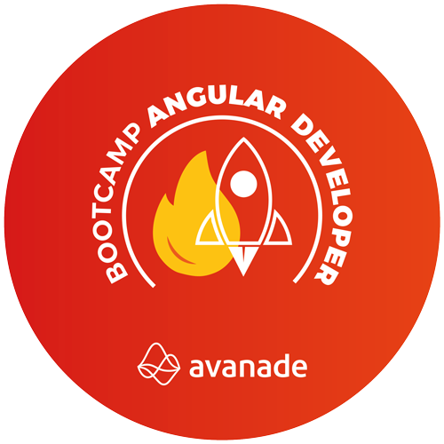

HTML Web Developer
Aprendendo a programar páginas de internet e desenvolver websites utilizando HTML, CSS e JavaScript me tornando um profissional em desenvolvimento web front-end.
concluido
START_UNI 2021 #1
O bootcamp START_UNI 2021 #1 é um programa gratuito para formação de desenvolvedores front-end, back-end e testers.
concluido

JavaScript Game Developer
Criar jogos com JavaScript para inciar uma carreira em desenvolvimento front-end e me transformar em um dev de alto nível.
cursando

Avanade Angular Developer
Aprendendo e aperfeiçoando o desenvolvimento de projetos usando Angular 8, buscando os requisitos básicos para conquistar uma oportunidade na Avanade Brasil